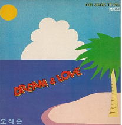

오석준 - 우리들이 함께 있는 밤
그대가 들려준 흔한
주변의
얘기
가 내 마음 편안하게 해 어둠이 음악사이로 흐르듯 다가오는 밤 찻잔을 매만지는 그대 손끝에 눈길이 멈추어지네 살며시 기대어오는 조그만 그댈 느끼며 달콤한 그숨결은 노래가 되어 귓가에 머물다 가네 
그대가 들려준 흔한 주변의 얘기가 내마음 편안하게해 괜시리 부담스런 지난하루 기억들 웃음속에 사라져가네